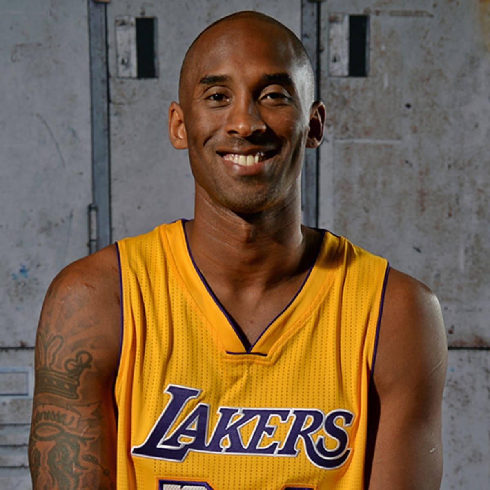
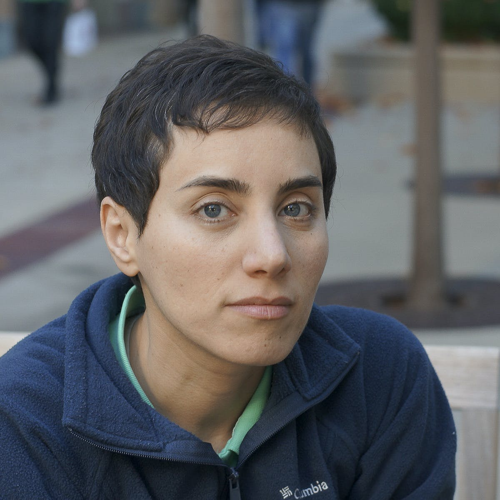
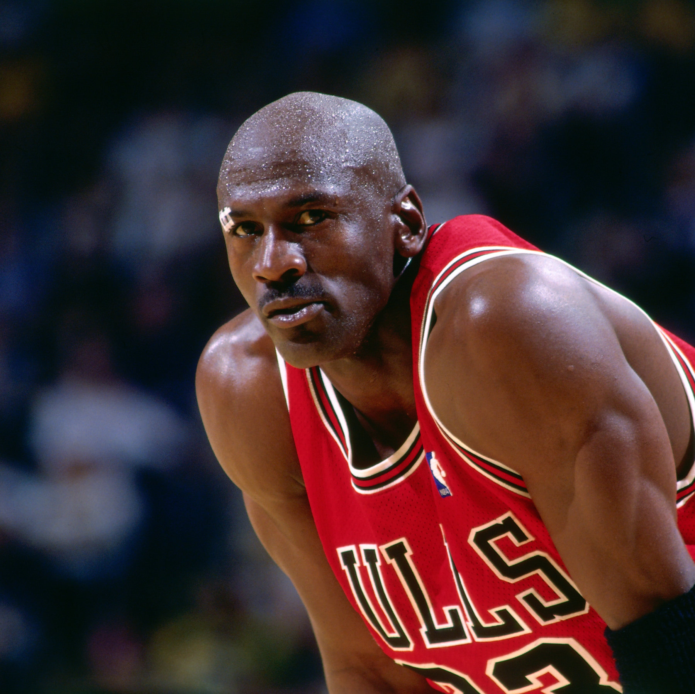

Kobe Bryant
“Everything negative - pressure, challenges - is all an opportunity for me to rise.”
When I got a poor JEE Main result in January 2019, I was pretty disheartened.
Around that time I read about Kobe's struggles during the 1996 playoffs and how he responded to them
(shutting himself in the gym and shooting all day), and I started treating the next few months the same
way.
I worked almost obsessively for the next three months. I'd watch preparation videos while eating and
revise inorganic chemistry at the gym; even during the commute I'd be memorising formulas.
I went from around the 95th percentile in January to 99.45 percentile in April.
What stayed with me wasn't really the score. It was the idea that a bad result doesn't have to be the end
of the tale, this mentality has helped me time and again since.

Maryam Mirzakhani
“The beauty of mathematics only shows itself to more patient followers.”
What I find inspiring about Maryam Mirzakhani isn't just the fact that she became the first woman to win
the Fields Medal.
It's that she dedicated herself to problems that were genuinely, ridiculously difficult.
The idea of spending a large part of your life working on something you don't fully understand yet is
something I find quite courageous.

Michael Jordan
“Limits, like fears, are often just an illusion.”
I've felt underrated at different points in my life.
What I admire about Jordan is the way he seemed to turn that feeling into fuel rather than letting it
become an excuse.
I don't necessarily think being underestimated is objectively a good thing. But if it happens, I'd rather
use it.
Also, his slightly manic competitive nature is weirdly close to Vegeta in my head. But I digress.